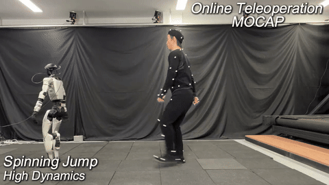

RSS 2026
OmniXtreme: Breaking the Generality Barrier in High-Dynamic Humanoid Control
Diverse extreme behaviors in one unified policy.
First-year PhD student at Shanghai Jiao Tong University, building toward general-purpose humanoids.
I am very fortunate to be co-supervised by Yong-Lu Li at SJTU and Siyuan Huang at BIGAI.
Previously, I was a Research Assistant at MARS Lab, Tsinghua University, advised by Hang Zhao.
I have also interned at NIO, Galaxea Dynamics, and Unitree Robotics.
RSS 2026
Diverse extreme behaviors in one unified policy.

arXiv 2026
Decoupling physical feasibility from tracking accuracy for stable humanoid motion control.
OmniXtreme accepted at RSS 2026!
Released OmniXtreme and OmniTrack!
"Diffusion-Based Generative Models for 3D Occupancy Prediction" accepted at ICRA 2025.
If you'd like to discuss research or collaboration, feel free to reach out.